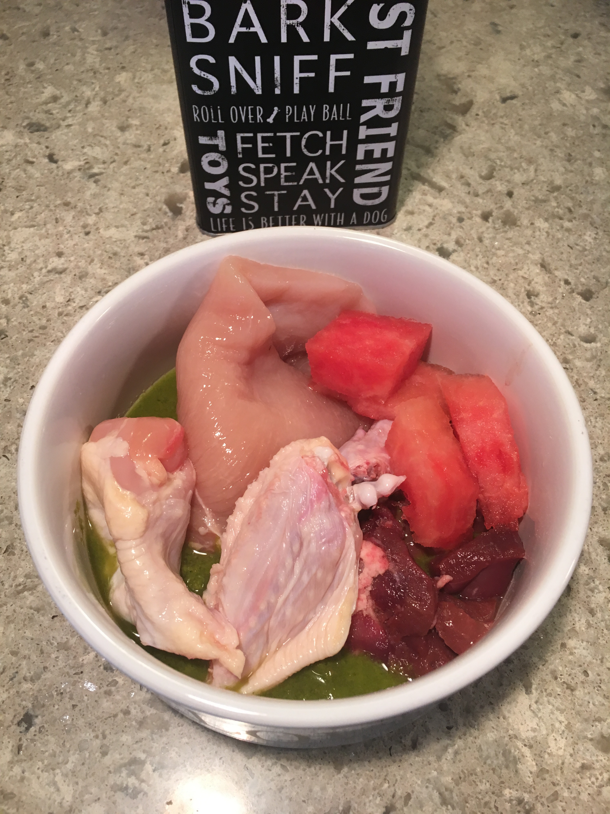
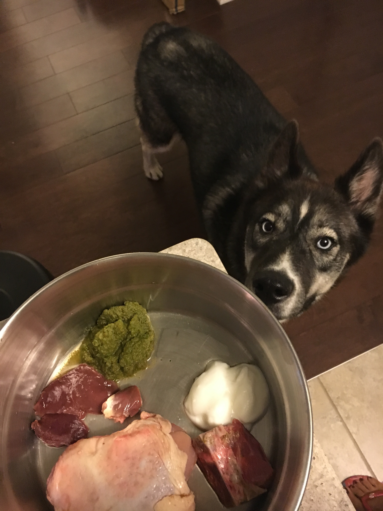
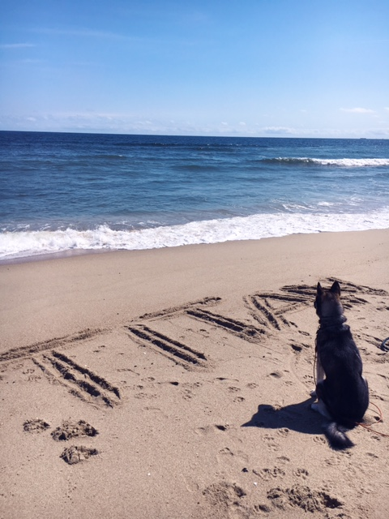
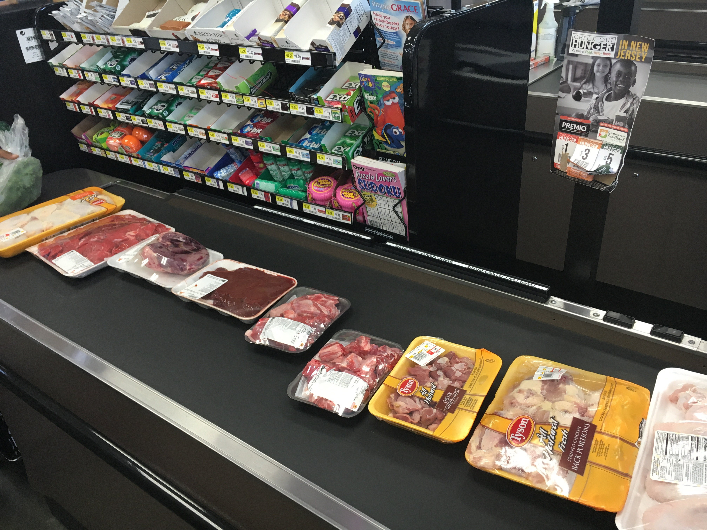
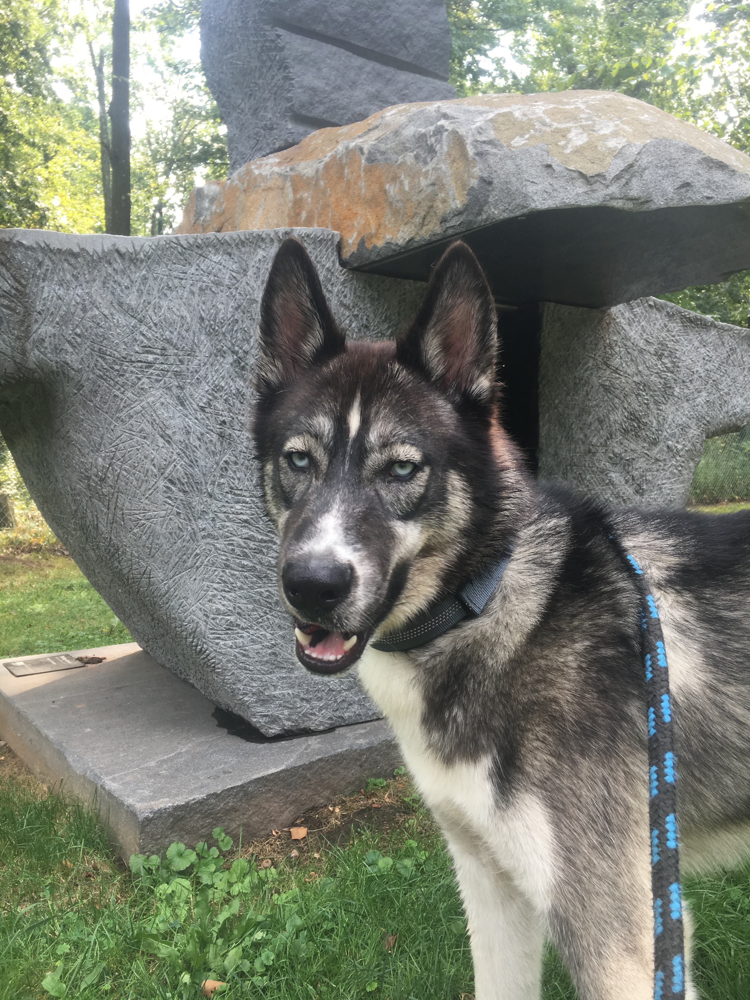

What is Raw?
Skeptical? Do you buy expensive kibble? Digesting raw chicken and bones?
My only intention is to share our journey that has become a lifestyle choice for not only our dog, but for our family. Raw is uncooked chicken, but it's also a mentality.
Getting Started
I'm curious, what's next? How to stock your kitchen, how "much" to feed your pup, tips on how to plan, prep and integrate seamlessly.
Raw Recipes
How to make the infamous veggie glop and how to save money at the grocery store
Raw Benefits

Dietary, shedding, sensitive stomach, allergies, arthoritis, under eating, over eating
Is Raw Expensive?
Could cost less than kibble depending on your current spending
Is Raw Just Trending?
Raw started with the dinosaus I would imagine
Who Else is Feeding Raw?
Who Else is Feeding Raw?
Darwin
Raw Food Packaging
Beyonce
Raw and Famous
The Pack
BARF Community